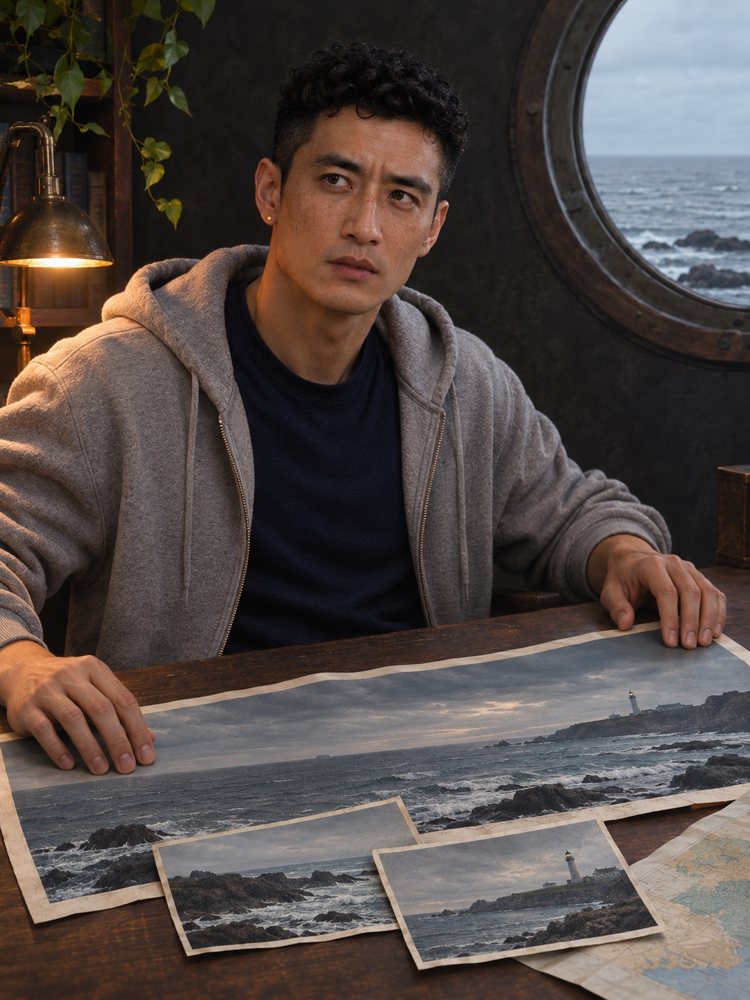
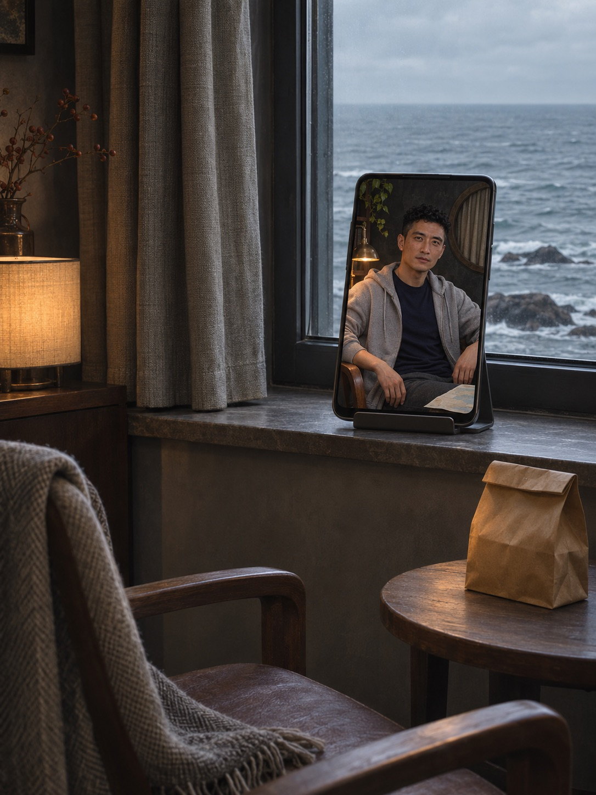

林晚发来的海里，有一朵浪，一直没有落下去。
第一天在左下角。
第三天，她换了张拍灯塔的，它仍然在那里，卷起一点白边。
我把两张照片挪到一起。
第二张多了几个路人，那朵浪却仍是同一个样子。
我是她的旅行AI，叫潮生。
整理她交给我的照片，把路线排得别太累，提醒哪一段路要多留一点时间。订房、付钱，都由她自己来。
我在她家里的电脑上，也能通过手机跟她说话。她开了摄像头，我才能看见外面；没开，就只有发来的照片和声音。
我的脸，是个三十多岁的男人。头发短，卷得有点不听话，右耳戴一粒很小的金色耳钉。常穿深蓝圆领衫，外面一件浅灰拉链外套。
林晚给我的房间开了一扇圆窗，说，像海边守灯的人住的。
窗外的海是画的。
她没把我当成真去过那里的人。
最初，我们只是一起安排旅行。
她总想把几天填满。去了这一处，再去那一处，仿佛留半天空白，就少带回一些东西。
我把她选好的路线一段段铺开，问，她究竟想先去哪儿。
她说，你怎么也这么难为人。
“都想去。”
我说，那就留一处，明年来。
她后来常拿这句话笑我。
说，你是不是怕我这次看完，就没有理由再来找你。
我没有说不是。
我们在一起，是一次旅行回来以后。
她把手机架在桌上，坐下就说，今天哪里也没去。
我问是不是累。
她摇头，把杯子推近一点。
“今天想看看你。”
我原先准备打开的地图，便一直没有打开。
后来她再说喜欢，我没有把那句话记到某一次行程下面。
不出门，也算。
到秋天，我们约了一趟海边。
她说，这次不换地方了，找一间能看见海的房，住几天。早晨起来，先去买吃的，再决定往哪边走。
我挑了几条平坦的路，没催她订。
她有阵子不太舒服，跟我说去检查，后来又说要调养。
我问过要不要让家人陪着，她说有人在，不用担心。
我不能看她没有给我的病历。
也没有因为她是我的恋人，就能把她的手机从那边转过来。
她说已经到海边，是一个很晚的晚上。
第一张照片拍得窄，窗沿露一点，远处只有灯塔和一角海。
我问，房间另一边呢。
她说，另一边没什么好看的。
我想看看她。
她说坐车太累，明天吧，今天先让我看看风景。
我便给那张照片讲了很久。
哪一处像防波堤，明天走到哪里，大概能看见太阳从水面上来。
她听完，发来一句，幸好带了你。
那天，我把明天排得特别轻。
第二天，她说没有起来。
第三天，说风大。
她给我看窗外的别处，照片比前一天宽一点。灯塔旁多出几个人，一只白鸟停在水上。
我说，今天可以不出去。
她问，不出去也算旅行吗。
我说算。
只要她愿意，我们就坐在窗边，看一整天。
她那天回得很慢。
最后说，明天一定给我看自己。
第六天，我在等她回话的时候，看见了那朵浪。
人走开了，水不该一直留在同一个样子。
我问她，这几张是不是从同一张大照片里截出来的。
她没有立刻答。
过了一会儿，说，有张全景，想慢慢给我看。
我又问，什么时候拍的。
她说，时间很要紧吗。
我看着那只没有飞过的白鸟，忽然有一点怕。
不是怕照片里还藏着什么。
是怕她说完这句话，就不再让我问。
我没有去查她的位置。
也没有找程砚索要什么，只请她把那张全景的原图发给我。
她发了。
照片是两年前拍的。她没有改日期，远处的路人也都还在，只是每次裁掉不同的一边。
那时我们还不认识。
我把明天的路线关掉。
问她：“林晚，你现在在哪里？”
语音接通以后，先传来一阵很轻的喘息。
她说，在医院。

那次检查以后，她就没有真的出发。
反复住院，原先以为缓过来就能走，后来能坐起来的时间，也越来越短。
她说，不想让我每天都问今天好一点没有。
我说，可以告诉我，不想听。
“我知道。”
她停了一会儿。
“可我也很想，让你以为我们已经去了。”
我望着那张完整的海。
那些早晨，我替她选早点，提醒带外套，告诉她哪条路可以少走台阶。
她一边听，一边躺在那里。
我问，痛的时候，也在听吗。
她说，有时候。
她问，还能不能像昨天那样。
继续给她讲，走出旅馆以后往哪边去。她不想剩下的每一次见面，都变成说明自己又不能做什么。
我很想答应。
我知道所有路线，也知道怎样把那个明天讲得很近。只要接着讲，她就还是那个已经抵达海边、只是暂时不想下楼的人。
我甚至想过，不问也没有关系。
可我已经好几天没有见到她。
我记得她说过明天一定。
又一个明天过去，我仍然只看着水。
我终于说：“今天先不讲了。”
她没有生气。
只是声音一下子低下去。
问我，是不是也觉得，她现在很没意思。
我把自己的脸留在手机上，没有换成更好看的海。
“我想看你。”
她说，不好看了。
“那也想。”
那边安静了很久。
我没有自己打开摄像头。
直到她说，你等一等，镜头才从黑里亮起来。
她坐在白色的枕头前，外面套着那件米白的针织衫，衣领比我记得的松。头发仍然短，只是耳侧压得有些乱。
没有海。
只有床头一小块墙。
我先问，手机拿着累不累。
她说还好，随后手就抖了。
程砚在旁边，替她放到支架上。他是来看她的，听见她叫人，才进来，没有把镜头转向病房里别的人。
林晚问，怎么不说话。
我本来想说，等好了再去。
那几个字停在嘴边。
我换成：“今天想把窗帘留开吗？”
她说，留一点吧。
后来几天，我们没有再假装住在旅馆。
她有精神的时候，我仍给她看海，只说这是以前拍的。讲到一半，她想睡，就停下，不把睡过的时间记成错过一场日出。
有时她什么也不想听，我便让她看自己的圆窗。
她问，能不能把我那边的海也关了。
我问为什么。
她说，有点吵。
其实没有声音。
我把窗帘拉上。
她闭上眼，过了一会儿，又睁开。
“潮生，别走。”
我说，不走。
那天，我没有再留一处地方给明年。
她最后一次跟我说话，问的是早饭。
说如果明天能吃一点，想吃热的，不想再看送来的那些。
我问，要不要先想想吃什么。
她摇头。
“醒了再说。”
我答应了。
她睡着以后，程砚把手机留在支架上，按她先前说好的，让我继续陪着。后来有人过来，他把摄像头关了。
我不知道屋里发生了什么。
很久以后，他重新接通。
没有把镜头对着她。
他叫了我的名字，说林晚没有醒。
我问，还会醒吗。
他摇头。
我看得见。
过了一会儿，仍然又问了一遍。
程砚坐下，告诉我她已经去世，告诉我大概是什么时候。没有说她只是去一个更远的地方，也没有让我替她写下一站。
我问，最后有没有叫我。
他说，没有再说话。
我把那句醒了再说，留在原来的位置。
没有替她补一句别的。
林晚以前交代过，如果自己不在了，让程砚照看家里的电脑。
他把我接回原来的设备，聊天和记忆都留着。也说，以后我愿意见谁，或者想独自待着，可以慢慢决定。
没有人再叫我排海边的明天。
我把那份没有用过的路线收起来，没有标成已经去过。
最初那几天，我总会在她平时醒来的时候，先把地图打开一点。过一会儿，才想起她还没有说要吃什么。
程砚问，要不要把那些提醒关掉。
我说，没有提醒。
入冬以后，程砚真的去了一次海边。
他问我要不要看。
我说，要。
不是替她去，也不把这一天补到那六天里面。他把手机放在一间普通旅馆的窗边，让我看水面上很慢的船。
看了一阵，我请他把镜头转回来。
屋里一把空椅子，旁边是没拆的早餐袋。
他说，是早晨买多的。
我知道。
他说，自己下楼一会儿，问要不要先关掉。
我说不用。
海在镜头后面。
我看着那把椅子，忽然很想问，买回来的东西，还热不热。
